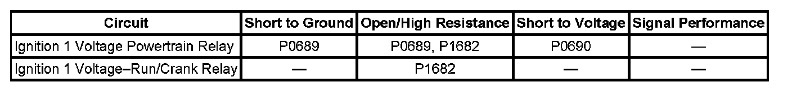
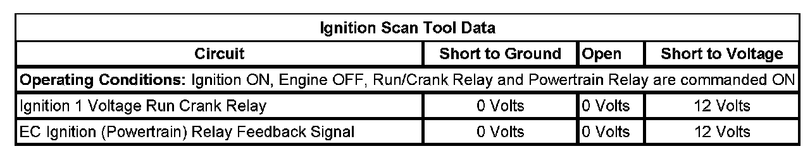

P1682
DTC P1682
DIAGNOSTIC INSTRUCTIONS
- Perform the Diagnostic System Check - Vehicle prior to using this diagnostic procedure. Initial Inspection and Diagnostic Overview
- Review Strategy Based Diagnosis for an overview of the diagnostic approach.
- Diagnostic Procedure Instructions provides an overview of each diagnostic category.
DTC DESCRIPTOR
DTC P1682
Ignition 1 Switch Circuit 2

DIAGNOSTIC FAULT INFORMATION
TYPICAL SCAN TOOL DATA
Ignition Scan Tool Data:

CIRCUIT/SYSTEM DESCRIPTION
There are 2 ignition 1 voltage circuits supplied to the engine control module (ECM). The first ignition circuit is provided by the powertrain relay, through a fuse. This ignition 1 voltage circuit supplies power to all the internal ECM circuits associated with the throttle actuator control (TAC) operation. The second ignition 1 voltage circuit is supplied by the run/crank relay through a fuse, and is used to power the remaining internal ECM circuits. If the ECM detects a voltage difference between the 2 ignition 1 voltage circuits, DTC P1682 will set.
CONDITIONS FOR RUNNING THE DTC
- The ignition is ON.
- System voltage is more than 5.23 volts.
- The powertrain relay is commanded ON.
- DTC P1682 runs continuously.
CONDITIONS FOR SETTING THE DTC
The ECM detects that the voltage level difference is greater than 3 volts between the 2 ignition 1 voltage circuits, for more than 3 seconds.
ACTION TAKEN WHEN THE DTC SETS
DTC P1682 is a Type B code.
CONDITIONS FOR CLEARING THE DTC
DTC P1682 is a Type B code.
DIAGNOSTIC AIDS
This test procedure requires that the vehicle battery has passed a load test and is completely charged. Refer to Battery Inspection/Test. Battery Inspection/Test
CIRCUIT/SYSTEM VERIFICATION
1. If DTCs P0685, P0689, or P0690 are set, diagnose those DTCs first.
2. IMPORTANT: On the scan tool, the Powertrain Relay is referred to as the EC Ignition Relay.
Ignition ON, engine OFF, observe both the Ignition 1 voltage signal and the EC Ignition Relay Feedback signal parameters on the scan tool. Both parameter values should display no more than 3 volts difference between the 2 parameters.
- If the vehicle passes the Circuit/System Verification test, operate the vehicle within the Conditions for Running the DTC. You may also operate the vehicle within the conditions that are captured in the Freeze Frame/Failure Records data list.
CIRCUIT/SYSTEM TESTING
IMPORTANT: You must perform the Circuit/System Verification before proceeding with Circuit/System Testing.
1. Ignition ON, observe the Ignition 1 Signal and the EC Ignition Relay Feedback scan tool parameter to determine which is less than B+.
2. Ignition OFF, remove the relay that corresponds to the scan tool parameter that is less than B+.
3. IMPORTANT: A resistance of 6 ohms or greater in the circuit/underhood fuse block will cause the DTC to set.
Ignition ON, connect a 3A fused jumper wire between B+ and the applicable ignition 1 circuit terminal. Verify that the applicable scan tool parameter displays B+.
- If the applicable scan tool parameter is less than the specified value, test the ignition 1 circuit for an open/high resistance. If the circuit tests normal, replace the ECM.
4. If all circuits test normal, replace the applicable relay.
REPAIR INSTRUCTIONS
Perform the Diagnostic Repair Verification after completing the diagnostic procedure.
- Control Module References for ECM replacement, programming, and setup
- Relay Replacement (Attached to Wire Harness) Relay Replacement (Within an Electrical Center)
- Underhood Electrical Center or Junction Block Replacement. Verification Tests